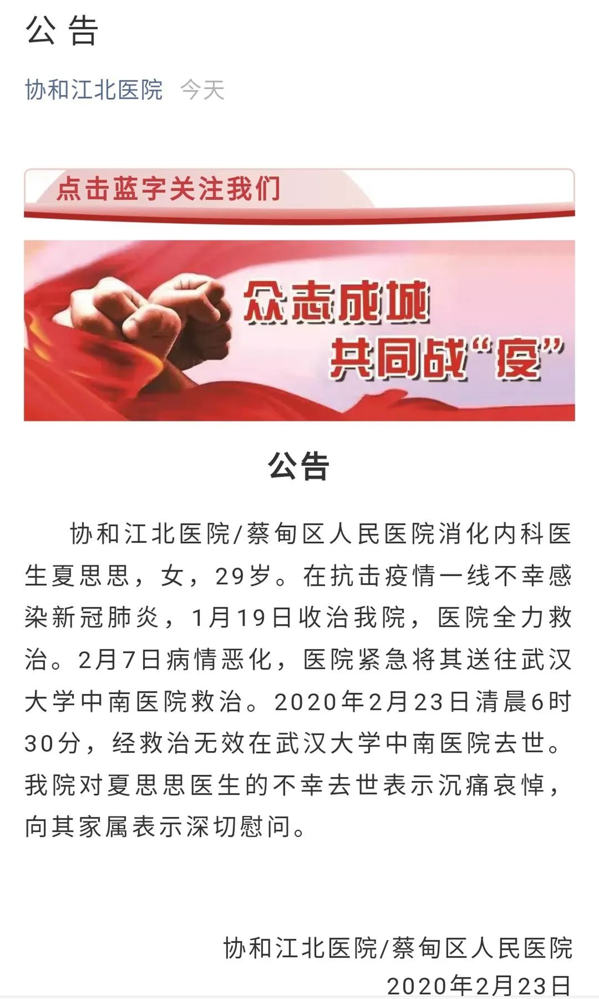
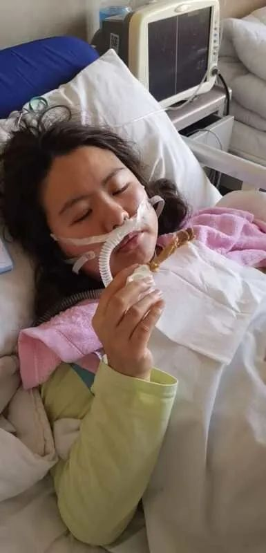
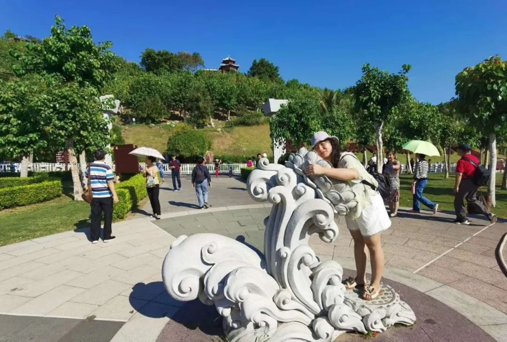
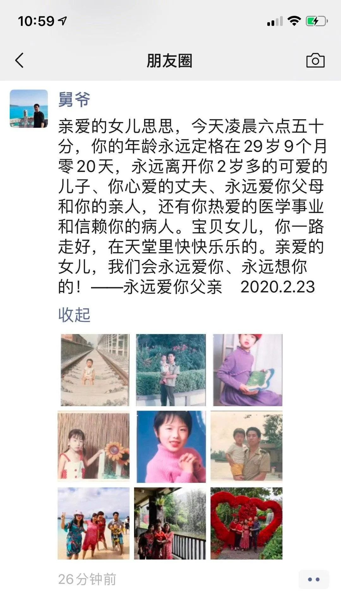
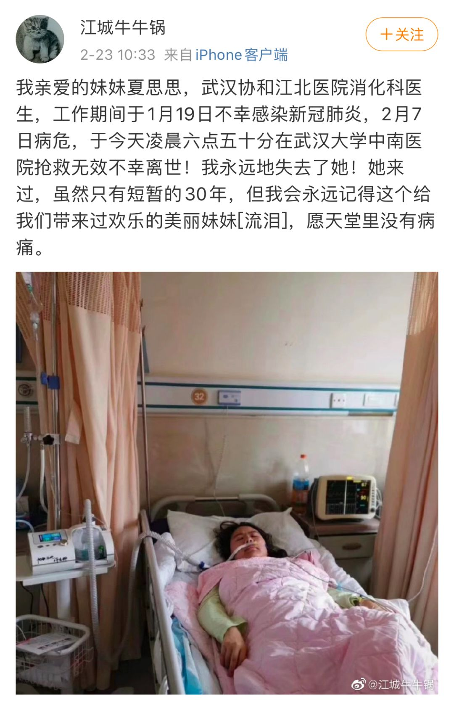

叶青：武汉30天，有件遗憾的事
原文链接 备份链接 非常时期，武汉成了全国人民挂念、祈福的城市。封城后，武汉人民的真实生活是什么样？随着抗“疫”有条不紊的进行，武汉发生了哪些变化？还存在哪些问题？ 正和岛自1月26日起特别推出“叶青专栏”。叶青是一位定居武汉40年的市 …
以下文章来源于楚天都市报 ，作者刘迅
[
楚天都市报
湖北发行量、影响力最大的纸媒，每天给你传递最新鲜、最实用、最好玩的资讯。](#)
楚天都市报
23日，
武汉协和江北医院官微发布公告，
哀悼在于今天清晨6时30分
不幸去世的夏思思医生。
公告全文如下：

丈夫：妻子感染，还想着康复与他上一线
今日中午，楚天都市报记者电话联系了夏思思的丈夫、武汉市普爱医院骨科医生吴石磊。
他哽咽着说：“她没留下一句话，突然就走了。
29岁的夏思思是协和江北医院消化内科住院医师，在救治患者过程中不幸感染。
1月15日，科室一名70多岁的老人病情加重，肺部CT发现异常。当天，夏思思刚下夜班，交接班后准备回家，临时接到任务，便通知丈夫改变行程，折回医院参与救治，协调专家会诊、检查。随后几天，夏思思担心老人病情，主动留在病房。
尽管有做防护，没想到还是被感染了。1月19日，她突然发起高烧，经检查，发现肺部CT磨玻璃影改变，高度疑似，便在协和江北医院隔离治疗。


“刚开始病情比较平稳，我们还商量，等她好了，我俩一起上一线。”吴石磊哽咽，2月7日半夜，妻子病情突然加重，呼吸、心跳骤停，医院连夜组织抢救，命虽然保住，但人一直处于昏迷状态，氧饱和也比很低。
专家组决定，先上ECMO（人工心肺）、立马转至武汉大学中南医院。在ICU，夏思思病情血压波动大，各大医院专家都在为其想办法。无奈，今天凌晨6:30分，抢救无效离世。
2岁的儿子还以为妈妈在上班
吴石磊说，两人大学学医，在最美好的校园相识、相爱，经历很多困难走到一起，至今已走过11个年头。

“为了我们的家，她也吃了不少苦。”吴石磊说，妻子怀孕23周时破水，保胎一动不动躺了十几天，在30周突然发烧，剖腹产下儿子，孩子当时只有3斤2两，在保温箱呆了很久。
“早产儿喂养很难，2年来，我们一家人几乎没有睡过整觉。”他说。
去年11月，为报答老人，夏思思利用年假，带着双方老人，一家人第一次齐齐整整的去三亚度假……


“没想到，这竟是最后一次。”
“孩子早产，这2年多都没能回老家，让爷爷奶奶看看。”吴石磊说，今年过年票都买好了，但因为疫情不得不推迟。我们想着等疫情结束，和老人好好团聚，哪知道……”
妻子住院期间，全家人瞒着孩子，骗她妈妈在上班。吴石磊说，只要电话响起，儿子就要抢来喊妈妈，如今妻子离开，他还不知道如何向孩子解释。
父亲悲痛万分，在朋友圈写下这么一段话
夏思思的父亲悲痛万分。在朋友圈写下这么一段话：
“亲爱的女儿思思，今天凌晨六点五十分，你的年龄永远定格在29岁9个月零20天，永远离开你2岁多的可爱的儿子、你心爱的丈夫、永远爱你父母和你的亲人，还有你热爱的医学事业和信赖你的病人。宝贝女儿，你一路走好，在天堂里快快乐乐的。亲爱的女儿，我们会永远爱你、永远想你的！——永远爱你父亲 2020.2.23”



网友评论：走好，美丽的天使！
江城牛牛锅：妹妹， 她站在两个世界的门口，誓把生命还给生命。别人说她逆行而上，其实这是她从未改变的方向。她是身披白衣的天使， 她守我同胞的国之战士， 她是敢与死神抢人的战“疫”者！
uvwxwz2016：节哀！致敬！一样的生命，我们可以在家里躲避这场瘟疫，但医生必须在一线救治别人的生命，这种感染是牺牲。说高尚，白衣天使，但其实也是一个普普通通家庭的一员，从此父母失去女儿，儿子失去妈妈，丈夫失去妻子，一个家庭破碎了。除了致敬，所有的词汇都是苍白。
想要断舍离012：愿天堂没有病痛 感恩你的勇敢和无私，感恩所有一线医护人员和其他工作人员，愿家人也节哀。
qiming_venus：生死时刻，义无反顾，即便是医护人员的天职，也需要大爱和大义。英雄是个遥远的概念，但白衣天使就在你我之间。
Makeup_YOYO：节哀 感恩所有一线医护人员和前线的工作人员，感恩他们的无私大爱，也感恩他们的家人[泪]愿家人节哀 平安健康
感恩所有一线医护人员和前线的工作人员，感恩他们的无私大爱，也感恩他们的家人[泪]愿家人节哀 平安健康

戳这里进入
“全国新型冠状病毒感染病例实时地图”↓↓↓
本期编辑 常琛
推荐阅读


原文链接 备份链接 非常时期，武汉成了全国人民挂念、祈福的城市。封城后，武汉人民的真实生活是什么样？随着抗“疫”有条不紊的进行，武汉发生了哪些变化？还存在哪些问题？ 正和岛自1月26日起特别推出“叶青专栏”。叶青是一位定居武汉40年的市 …
原文链接 备份链接 武汉新冠肺炎疫情肆虐，每一个家庭都在举全家之力，从防疫生死线上拽住家人。患者、家庭、医院……求医与救治环环相扣。有的人最终去世，更多的人在治愈出院，在历经煎熬、等待、悲痛、喜悦之后，用人心和勇气筑起的这道防疫线，正在变 …
原文链接 备份链接 这些患者再次发病的时间、病程和就诊难度各异，但他们至今不清楚，自己是“复发”还是没有被治愈？他们曾被计入治愈出院的统计病例中，而突发的症状和重新检测结果意味着，他们实际上没有被彻底治愈 文 |《财经》记者 房宫一柳 刘 …
原文链接 备份链接 新冠疫情爆发以来，武汉市已征用50家医院作为定点医院，很多非新冠病人要么在治疗中被清理出院，要么在疫情期间发病，面临就医困难。 8个月大的陈锦媛，身患罕见先天性心脏病，急需手术，父母驾车千里“突围”，送她到北京，但 …
原文链接 备份链接 从第一例患者入院，金银潭医院已超负荷运转近两个月。医生、护士、病人、志愿者，都在为新冠病毒不眠不休，昼夜奋争。绝望和希望、晦暗和明朗、苦涩和感动，也交织纵横，罩住整座江城。 全文7410字，阅读约需14分钟 点击下图 …